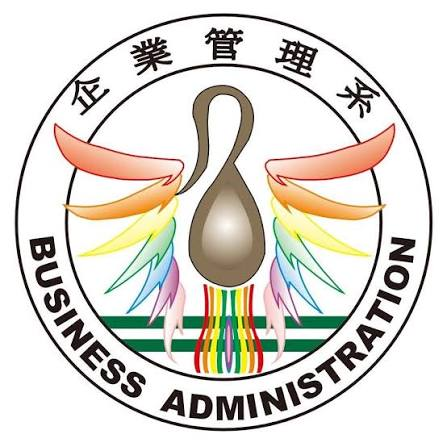

Vanung University Department of Business Administration | Faculty Application Presentation
Interview Topic: Decision Science & AI Applications
A Practical & Research Framework for Cultivating Next-Gen Business Administration Talents
Research Specialties: